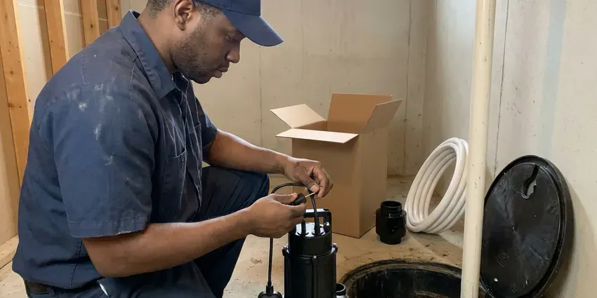
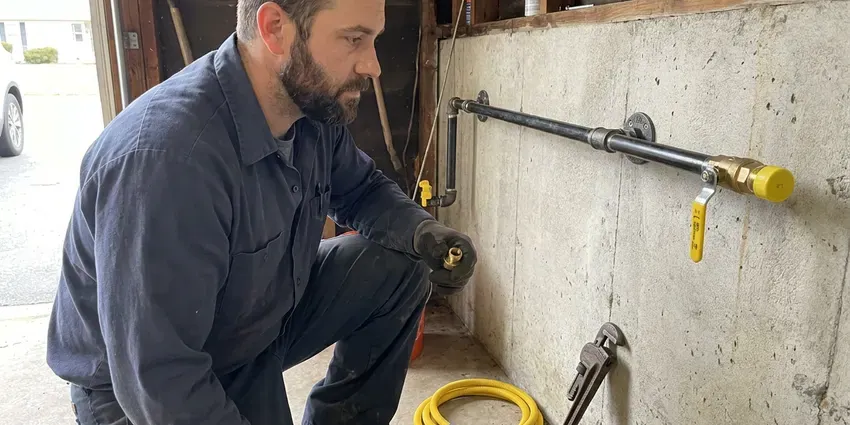
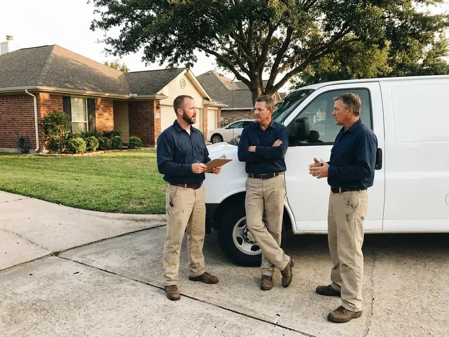

Water Heater Installation in Oshkosh, WI
For professional water heater installation in Oshkosh, WI, trust the licensed plumbers at HKV Plumbing. We handle all types of units, delivering comfort and efficiency for your household.
- Upfront Pricing
- Licensed Plumbers
- Trusted Brands
- Permits and Code Compliance
Schedule Your Water Heater Installation in Oshkosh, WI.
Don't wait for cold showers, call HKV Plumbing for a professional assessment and installation.
Your Trusted Source for Water Heater Installation in Oshkosh, WI
HKV Plumbing sizes every water heater based on household needs, fuel type and available space. We install new connectors, relief lines, venting and expansion tanks where needed, then remove the old unit.
Our expertise includes:
- Code-compliant venting and piping for all units.
- 40, 50 and 75 gallon gas and electric tank installations
- Gas and electric water heater setup and connection.

Additional Plumbing Installation Services in Oshkosh, WI
We install water heaters, pumps, lines, and fixtures across Oshkosh, WI with careful, permitted work that passes inspection the first time.


Sump Pump Installation near Oshkosh



Gas Line Installation in Oshkosh

Customers
Why Choose HKV Plumbing for Water Heater Installation in Oshkosh, WI?
Hard water is common across much of Wisconsin, especially where supply comes from groundwater moving through limestone and dolomite. That is why the next install needs to be done right. We follow manufacturer specs and local code to preserve your warranty and safety.
- Local Knowledge, Our team understands Wisconsin climate and water conditions, recommending the best water heater types for durability.
- Licensed Professionals, Our team is made up of fully licensed and insured plumbers, guaranteeing safe and compliant installations every time.
- Transparent Pricing, We provide clear, upfront estimates so you know the cost before any work begins.
Citywide Coverage
From older neighborhoods to the newest developments, HKV Plumbing covers all of Oshkosh for your water heater installation needs. Our local presence means we can respond quickly and understand the specific requirements of homes in this area. We are your neighbors, committed to serving our community.
Experienced Team
The HKV Plumbing team brings years of hands-on expertise to every water heater installation project. We are skilled in assessing your home's needs, recommending the best unit and completing a clean installation. Our commitment to excellence supports your satisfaction and long-term hot water comfort.
Safety-First Approach
At HKV Plumbing, we put safety first during water heater installation. We conduct careful inspections, ensure proper venting for gas units and verify all electrical connections are secure. Our adherence to strict safety protocols and local Wisconsin regulations guarantees a secure and worry-free installation for your Oshkosh home.
Trusted Certified Oshkosh Plumbing Services Professionals
At HKV Plumbing, we take pride in providing certified plumbing services throughout Oshkosh, WI. Backed by recognized industry credentials, our experienced plumbers combine technical skill with genuine customer care. Whether it is repair, installation, or maintenance, we follow strict safety and quality standards to deliver lasting results you can trust.
Call Us Now PHCC Plumbing Contractor Recognition
PHCC Plumbing Contractor Recognition Better Business Bureau (BBB) Accreditation
Better Business Bureau (BBB) Accreditation Angi Certified Pro
Angi Certified Pro ISO 9001 Quality Management Certification
ISO 9001 Quality Management CertificationDependable Water Heater Installation Services in Oshkosh, WI
Electric Tank Water Heater Installation in Oshkosh, WI
Electric tank water heaters are common in homes without natural gas service. We install models with the correct voltage and breaker size for your electrical panel. These units do not need venting, which allows more flexible placement. We also install a drain pan when the heater is in a closet or attic. Electric models are simple, dependable and quiet.

Gas Water Heater Replacement in Oshkosh
Many homes in Oshkosh use natural gas for their water heaters due to its efficiency and lower operating costs. When replacing a gas water heater, precise gas line connections, proper ventilation and carbon monoxide detection are critical. Our licensed plumbers are experienced with gas appliance installation, making sure every safety measure is met. We check for leaks, test the igniter and confirm proper exhaust, adhering to all local Wisconsin codes. You can trust us to safely and effectively install your new gas water heater, providing dependable hot water.
Tankless Water Heater Installation in Oshkosh, WI
Tankless water heaters provide on-demand hot water, saving energy and space, and they are more and more popular in Wisconsin homes. Our plumbers specialize in installing these highly efficient units, ensuring proper gas line sizing or electrical service upgrades if needed. We also address venting requirements, which are often different from traditional units. While the upfront cost can be higher, the long-term energy savings and endless hot water supply make them an attractive option for many homeowners in Oshkosh. We'll help you choose the right model for your particular needs.
Expansion Tank Installation in Oshkosh, WI
Many homes have a pressure reducing valve or check valve that creates a closed system. When water heats and expands, pressure can rise and stress pipes and relief valves. An expansion tank absorbs that extra pressure. We install and pre-charge the tank to match your water pressure. This protects your new water heater and plumbing.
Electric Water Heater Installation in Oshkosh, WI
Electric water heaters are common in homes without natural gas access or where homeowners prefer electric appliances. Our installation process for electric units in Oshkosh includes verifying correct electrical wiring, breaker sizing and secure connections. We ensure that the new unit meets all electrical safety standards and local building codes. While electric units can have higher operating costs than gas in some areas, they are often simpler to install and maintain. We'll help you select an energy-efficient model that fits your budget and needs.
Major Brand Water Heater Installation in Oshkosh, WI
HKV Plumbing is experienced in installing all major water heater brands, including Rheem, Bradford White, A.O. Smith and Noritz, for residents across Oshkosh, WI. Each brand offers different features, efficiencies and warranty options. Our plumbers are knowledgeable about the installation requirements for each manufacturer, ensuring your warranty remains valid and the unit performs as designed. We can help you sort through the options and choose a reputable brand that aligns with your budget and hot water needs, providing expert installation regardless of the model.
Water Heater Installation Cost in Oshkosh, WI
Tank water heater installations generally cost less upfront than tankless systems. Gas tankless installs can cost more because of gas line upgrades and venting. Attic installs, relocations and code upgrades may add to the price. We provide a written quote that includes the unit, labor, permits and haul-away. We also compare long-term energy costs so you can make an educated choice.

Hybrid Heat Pump Water Heater Installation in Oshkosh, WI
Hybrid heat pump water heaters pull heat from surrounding air, which can make them efficient in warm garages and utility rooms. We install models from Rheem and A.O. Smith with proper condensate drainage. These units need adequate air space and clearance. They may qualify for utility rebates or tax credits. We help you decide if a hybrid is right for your home.
Water Heater Installation Near Me in Oshkosh, WI
Our team understands the water conditions and home layouts in the area. We recommend units that hold up to local water and where they will be installed. You get a professional installation and clear advice on maintenance.
When you need water heater installation near me, our local plumbers can be there fast. We stock popular models so most installs do not wait on special orders. Many customers have hot water again the same day.
HKV Plumbing at a Glance
- Licensed and insured plumbers serving Oshkosh, WI
- 24/7 emergency service with same-day scheduling
- Upfront, flat-rate pricing before work begins
- 4.8-star rated by 448+ Wisconsin customers
Oshkosh Map
Oshkosh Information
- Population
- 66,184
- Area codes
- 920/414/262
- Service area
- Oshkosh and communities within 40 miles
- Nearby
- Appleton, Green Bay, Sheboygan, Wauwatosa
Having a properly installed water heater is essential for homes in Oshkosh, WI, where families need dependable hot water year-round for comfort and sanitation.
Expert Services
Trust our professionals for reliable HKV Plumbing solutions in Oshkosh, WI.
Our Specialized Plumbing Services in Oshkosh, WI
At HKV Plumbing, we provide a complete range of plumbing services across Oshkosh, WI. From leak detection to full system installations, our team ensures fast, precise, and affordable service for both residential and commercial properties. Explore our core services below:


How Our Water Heater Installation Process Works in Oshkosh, WI
Our water heater installation process is quick, safe and designed to restore hot water quickly.
Request a Quote
Contact HKV Plumbing by calling (414) 432-4641 or filling out our online form to discuss your water heater needs. We will schedule a good time for a plumber to assess your current system and provide an honest, upfront quote for a new installation.
Expert Assessment
Our licensed plumber will visit your Oshkosh home to evaluate your hot water usage, existing plumbing and space requirements. They will recommend the best type and size of water heater for your particular situation and answer any questions you may have.
Professional Installation
Once you approve the quote, our team will proceed with the installation of your new water heater. We handle everything from safely disconnecting and removing your old unit to installing the new one, making all necessary connections and ensuring proper venting and code compliance.
Frequently Asked Questions About Water Heater Installation in Oshkosh
A standard 40 to 50 gallon tank water heater usually costs $1,600 to $3,500 installed. Tankless installations often run $3,000 to $6,500 depending on gas line and venting needs.
An expansion tank absorbs excess water pressure created as water heats up inside the tank. Many homes in Oshkosh, WI, especially those with closed-loop plumbing systems, are required by code to have an expansion tank to protect the water heater and plumbing system from damage.
The correct size water heater depends on the number of people in your household and your peak hot water demand. For tank units, a 40 to 50 gallon tank is common for 2 to 4 people, while larger families might need 60 to 80 gallons. For tankless units, it is about flow rate (GPM) and temperature rise. Our plumbers will assess your needs to recommend the ideal size.
Many jurisdictions require a permit for water heater replacement. We pull permits when required and confirm the install meets code.
Common signs that you might need a new water heater include a lack of hot water, rusty or discolored water coming from the hot tap, banging or rumbling noises from the tank, visible leaks around the base of the unit and an age of 10 to 15 years or more. If you notice any of these issues, it is best to have a professional inspection.
The decision to repair or replace often depends on the age of your unit, the cost of the repair and its energy efficiency. If your water heater is over 10 years old, frequently breaks down, or the repair cost is more than 50% of a new unit, replacement is often the more cost-effective choice. Newer models also offer significantly better energy efficiency.
Many tank water heaters last 8 to 12 years, though hard water can shorten that. Regular flushing and anode rod checks help extend life.
A standard tank replacement typically takes two to four hours. Tankless installs or relocations can take most of a day.
What People Are Saying About Our Plumbing Experts?
Daniel K.
A pipe burst at 11 pm and they actually answered. The plumber showed up within the hour, shut everything down, and had us back to normal the next morning. Could not ask for more.
Emergency Plumbing · Oshkosh, WI
Laura S.
I scheduled a water heater replacement, and the team made the process smooth and affordable. The new unit works perfectly, and they cleaned up after completing the job.
Water Heater Replacement · Sheboygan, WI
Mark T.
When our office needed drain cleaning, HKV Plumbing provided quick, reliable service. The plumber arrived on time and made sure every drain flowed perfectly before leaving. Very satisfied.
Drain Cleaning · Appleton, WIEmily R.
I called HKV Plumbing for plumbing repair, and the technician was fast, polite, and thorough. They explained the problem clearly and fixed it the same day. I will definitely hire them again. Highly recommended!
Plumbing Repair · Oshkosh, WI
James P.
Our commercial plumbing system had a leak under the sink, and HKV Plumbing handled it professionally. The plumbers arrived quickly and restored everything without disruption to our customers.
Commercial Plumbing · Sheboygan, WIRobert G.
The trenchless sewer replacement saved our front yard. They walked us through the camera inspection footage first so we knew exactly what we were paying for.
Sewer Line Replacement · Sheboygan, WI